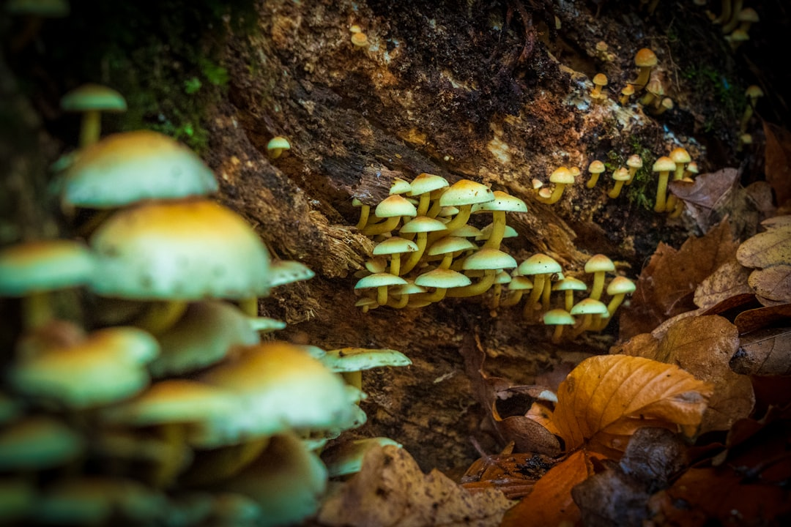

News
Psychoactive Effects
Psychoactive Effects
Hallucinogenic Compounds
Altered States of Consciousness
Cultural and Recreational Use
Therapeutic Uses
Therapeutic Uses
Mental Health Treatment
Microdosing Benefits
Clinical Research
Legal Status
Legal Status
Regulation and Decriminalization
Legal Risks and Penalties
Comparative International Laws
About Us
A Beginners Guide to Identifying and Using Magic Mushrooms Safely
Jun 25, 2025
A Beginners Guide to Identifying and Using Magic Mushrooms Safely Magic mushrooms, also known as psychedelic mushrooms, have been a topic of fascination and intrigue for centuries.. With their ability to induce altered states of consciousness, they have been used in various cultural rituals and are now gaining attention for their potential therapeutic benefits.
Cultural and Historical Significance of Psychedelic Mushrooms Across Civilizations
Jun 25, 2025
The Cultural and Historical Significance of Psychedelic Mushrooms Across Civilizations Psychedelic mushrooms, often referred to as "magic mushrooms," have a rich tapestry of cultural and historical significance that spans across various civilizations.. These fungi, known for their hallucinogenic properties due to the presence of compounds such as psilocybin, have been used by humans for thousands of years.
How to Elevate Your Consciousness with Magic Mushrooms Like Never Before
Jun 25, 2025
Elevating Consciousness: The Mystical Journey with Magic Mushrooms In the quest for understanding and expanding human consciousness, magic mushrooms have emerged as both a profound tool and a subject of intrigue.. These natural fungi, known scientifically as psilocybin mushrooms, have been used for centuries in various cultures for their powerful psychoactive properties.
How to Harness the Healing Potential of Magic Mushrooms for Personal Growth
Jun 25, 2025
Harnessing the Healing Potential of Magic Mushrooms for Personal Growth In recent years, there has been a resurgence of interest in psychedelics, particularly magic mushrooms, as tools for personal growth and healing.. These fungi, scientifically known as psilocybin mushrooms, have been used for centuries by indigenous cultures for spiritual and medicinal purposes.
How to Safely Explore the Mystical World of Magic Mushrooms and Discover Yourself
Jun 25, 2025
How to Safely Explore the Mystical World of Magic Mushrooms and Discover Yourself The mystical world of magic mushrooms, known scientifically as psilocybin mushrooms, has been a subject of intrigue for centuries.. Revered by ancient cultures for their spiritual and healing properties, these fungi have found a resurgence in modern times as individuals seek deeper self-understanding and personal growth.
How to Tap Into Unseen Dimensions Using Magic Mushrooms Today
Jun 25, 2025
How to Tap Into Unseen Dimensions Using Magic Mushrooms Today In the corridors of human curiosity and spirituality, few subjects evoke as much intrigue and debate as the use of psychedelic substances.. Among these, magic mushrooms, or psilocybin mushrooms, hold a particularly revered place.
How to Transform Your Reality with Magic Mushrooms: The Ultimate Guide
Jun 25, 2025
How to Transform Your Reality with Magic Mushrooms: The Ultimate Guide Magic mushrooms, known scientifically as psilocybin mushrooms, have been used for centuries by indigenous cultures for spiritual and healing purposes.. Today, they are gaining renewed attention for their potential to transform reality and provide profound personal insights.

How to Unlock the Hidden Powers of Magic Mushrooms for a Mind-Blowing Experience
Jun 25, 2025
Unlocking the Hidden Powers of Magic Mushrooms for a Mind-Blowing Experience In recent years, the enigmatic world of magic mushrooms has captured the imagination and curiosity of many, as these fungi hold the promise of profound personal insights and transformative experiences.. While they have long been enveloped in mystery and controversy, modern research is beginning to illuminate their potential benefits.
The Role of Magic Mushrooms in Modern Wellness and Personal Growth
Jun 25, 2025
The Role of Magic Mushrooms in Modern Wellness and Personal Growth In recent years, the realm of wellness and personal development has seen a fascinating resurgence in interest towards substances that were once marginalized or deemed taboo.. Among these substances, magic mushrooms, known scientifically as psilocybin mushrooms, have emerged as a focal point for those seeking alternative paths to mental health and self-discovery.
The Science Behind How Psilocybin Affects the Brain
Jun 25, 2025
The Science Behind How Psilocybin Affects the Brain Psilocybin, the active compound found in certain mushrooms commonly referred to as "magic mushrooms," has been a subject of scientific intrigue and cultural fascination for decades.. While its effects have been celebrated in various traditional ceremonies and modern recreational use, it is only recently that researchers have begun to unravel the complex ways in which psilocybin interacts with the brain.
The Therapeutic Potential of Psilocybin in Mental Health Treatment
Jun 25, 2025
The Therapeutic Potential of Psilocybin in Mental Health Treatment In recent years, there has been a resurgence of interest in the therapeutic potential of psilocybin, a naturally occurring psychedelic compound found in certain species of mushrooms.. Historically associated with spiritual and mystical experiences, psilocybin is now at the forefront of scientific research for its promising role in mental health treatment.
What is Involved in a Guided Magic Mushroom Experience?
Jun 25, 2025
Exploring the Depths: What is Involved in a Guided Magic Mushroom Experience? In recent years, the use of psychedelics, particularly magic mushrooms, has gained significant attention for their potential therapeutic benefits.. As more people become interested in exploring these substances, guided magic mushroom experiences are becoming increasingly popular.
What is Microdosing and Why Are People Using Magic Mushrooms This Way?
Jun 25, 2025
Microdosing: A New Frontier for Magic Mushrooms In recent years, the term "microdosing" has emerged as a prominent topic in discussions about mental health, wellness, and alternative medicine.. This practice involves consuming very small, sub-perceptual doses of psychedelic substances such as psilocybin mushrooms—commonly known as magic mushrooms—to enhance various aspects of life without inducing the full-blown psychedelic experience.
What is Psilocybin and How Does It Affect the Brain?
Jun 25, 2025
Psilocybin, a naturally occurring psychedelic compound found in certain species of mushrooms, has been a subject of fascination and study for decades.. Often referred to as "magic mushrooms," these fungi have been used in various cultural and religious ceremonies for centuries.
What is the Difference Between Magic Mushrooms and Other Psychedelics?
Jun 25, 2025
Magic mushrooms and other psychedelics have captivated human curiosity for centuries, revered by some cultures for their spiritual significance and explored in modern times for their potential therapeutic benefits.. While sharing a common thread of inducing altered states of consciousness, magic mushrooms and other psychedelics are distinct entities with unique properties, origins, and effects. Magic mushrooms, scientifically known as psilocybin mushrooms, contain the active compounds psilocybin and psilocin.
What is the History of Magic Mushrooms in Traditional Cultures?
Jun 25, 2025
Magic mushrooms, scientifically known as psilocybin mushrooms, have a rich and storied history across various traditional cultures.. These fungi have been revered for their psychoactive properties, serving as spiritual conduits, healing tools, and mediums of transformation.
What is the Legal Status of Magic Mushrooms in the U.S.?
Jun 25, 2025
Magic mushrooms, known scientifically as psilocybin mushrooms, have long intrigued both the curious and the cautious.. These naturally occurring fungi contain psilocybin, a psychedelic compound that can induce profound alterations in perception, mood, and cognition.
What is the Potential Therapeutic Use of Magic Mushrooms for Mental Health?
Jun 25, 2025
The Potential Therapeutic Use of Magic Mushrooms for Mental Health In recent years, the conversation surrounding mental health has shifted dramatically, welcoming a more open and progressive dialogue about potential treatments.. Among the myriad of options being explored is the use of psilocybin, the active compound in magic mushrooms, as a therapeutic agent for various mental health disorders.